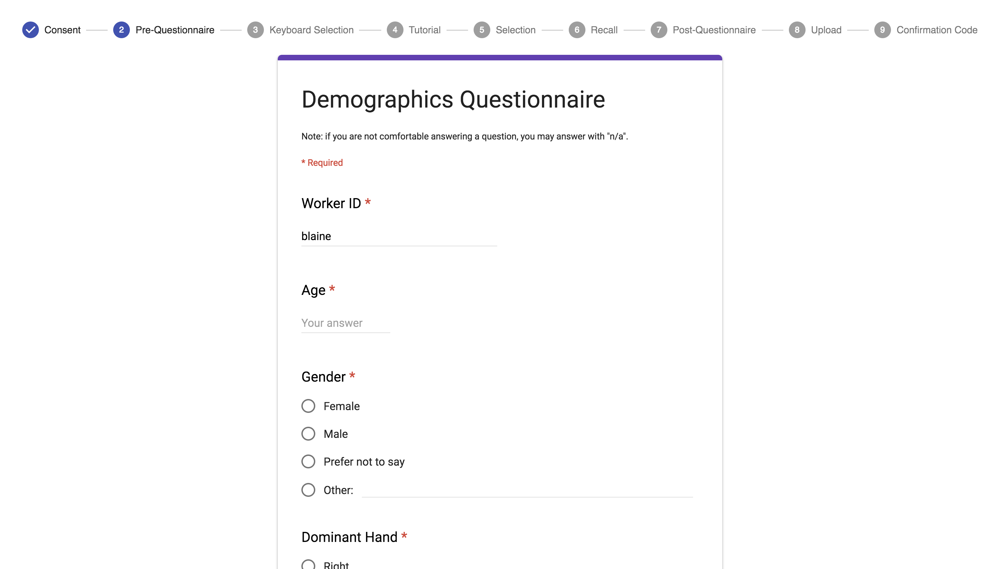

Experimental Framework
I built an experimental framework to allow for fast prototyping of experimental designs and deployment across a variety of devices. The framework works with Electron or in modern browsers. For simiplicity it stores data using Amazon S3. Participants can be recruited in any manner you can provide a link (eg. crowdsourced via Mechanical Turk, Crowdflower or via email.) It is built using React and Redux. It includes some built-in components you can try here. An example experiment can be completed here